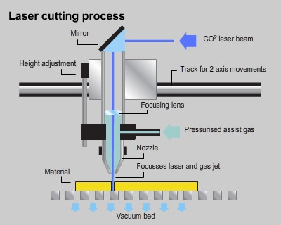
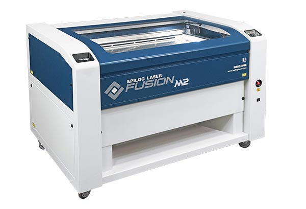
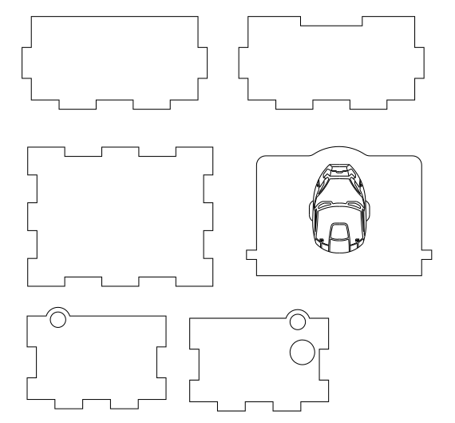

Laser Cutting
LASER in laser cutting stands for Light Amplification by Stimulated Emission of Radiation.
Laser cutting is a process where a material is placed along the XY plane and a very powerful laser beam at a precise focal length, is moved across and above the material. Which would either cut or etched depending on the settings. The high intensity of the beam will cause the material to be vaporised. Laser cutters cut materials similarly to other computer controlled tools. They use a beam of light instead of a blade.
Common laser cutting materials used are wood, plastic, acrylic, cardboard and metal. There are also materials that are not safe to cut as it will cause fire. E.g. Polycarbonate, polystyrene foam, polypropylene foam and oily/resinous woods.
How does a laser cutting machine work?
A typical beam is the CO2 laser beam as it’s wavelength is in the Infra-Red part of the light spectrum. It is invisible to the human eye. The beam bounces in different directions due to mirrors, before it focuses onto the lens. The lens helps to focus the laser beam down to a single precise pinpoint. Compressed gas such as Oxygen or Nitrogen is also flowing through the nozzle. Laser cutting is a stable, reliable, and very accurate cutting process. The smoke/fume extractor helps to prevent accumulation of smoke and gas in the machine. Contaminated air would go through the carbon and HEPA filter to remove microparticles and odors. The air compressor keeps the laser path free of smoke and debris.
EPILOG FUSION 40 M2 LASER
The laser cutting machine I am using would be the EPILOG FUSION 40 M2 LASER. Here's some information about this printer I found online:
ASSIGNMENT
For the laser cutting assignment, I am to create a music box in Fusion 360 and then laser cut it out.
Here's my music box and a quick summary of how I did it:
1. I am using parameters so that it would be easier for me to modify the dimensions if I need to. Parameters saves a fixed value we input.
2. The sketch of the base plate.
3. How the base plate looks like after extrusion.
4. The sketch of the side plate.
5. How the side plate looks like after extrusion.
6. The sketch of the front plate.
7. How the front plate looks like after extrusion.
8. The sketch of the top plate.
9. How the top plate looks like after extrusion..
10. Changed the design for the top plate.
11. Added a hinge on the side plate.
12. Added supports for the hinge on the top plate.
13. Copy and pasted the side and front plate. The front plate becomes the back plate and it needs changes.
14. The back plate is changed.
15. Added a hole on the right plate for the movement knob. I went to fillet the sharp edges of the top plate.
16. The 3D model for the music box is done!
Laser Cutting Preparation:
We would need to convert our 3D model to a .dxf file and then import it into Inkscape. To know more about inkscape, click here.
Here is how I imported my 3D music box model into Inkscape:
1. I will only be demonstrating the top plate. Click on the surface of the top plate and then click Sketch.
2. Click on FINISH SKETCH.
3. Go to Sketches > choose the last sketch > save as .dxf file. Save the rest of the plates too.
4. I wanted to add an engraving design on my music box, so the image I chose was Iron Man.
5. Here's how the outline sketch of Iron Man look like. Repeat step 2-3 (save sketch as .dxf file).
6. Import the all the .dxf file into Inkscape. Save it as .svg file in Inkscape.
Here's the final .svg file:
Settings for Laser Cutting:
1. When in the workshop, open the CorelDraw software and import our .svg file.
2. Scale it to 1:1. Select and click on the lines that are meant to be cut out. Change the colour of selected lines to RGB 255, 0, 0 (red).
3. Select and click on designs that are to be engraved. Change the colour to RGB 0, 255, 0 (green).
4. Click on print.
5. We would be redirected to the printing page. Always turn on Auto Focus.
6. For cutting, Click on the import icon, Engrave: Cherry/Aider/Walnut 300 DPI. Thickness: 3mm and turn on air assist.
7. For engraving, Thickness: 3mm, Speed: 15%, Power: 85%. Click on the import icon, Vector: Plywood(3mm). Turn on air assist.
8. Finally, click print and press the GO button on the machine.